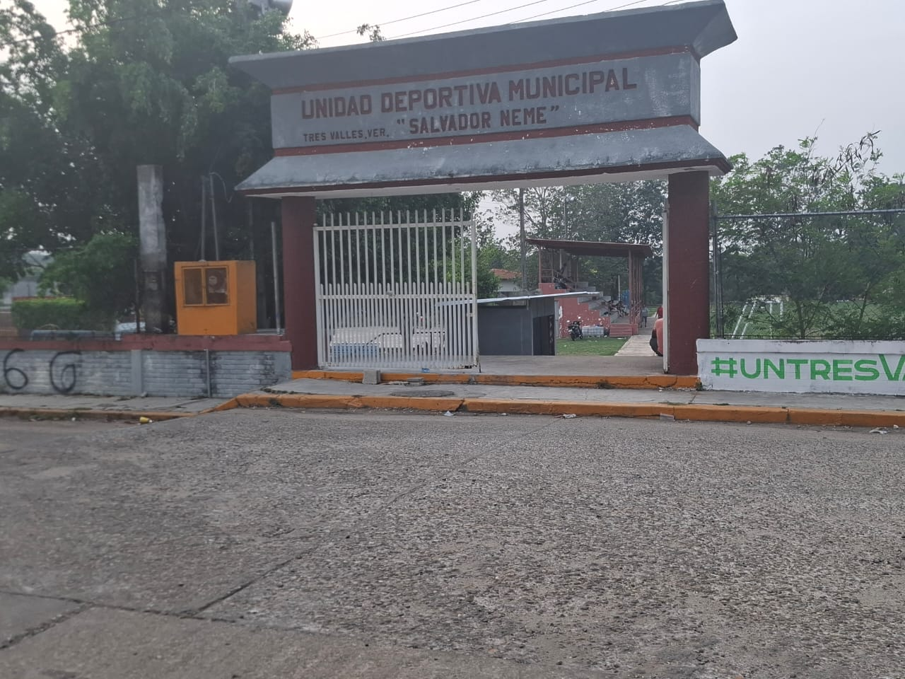
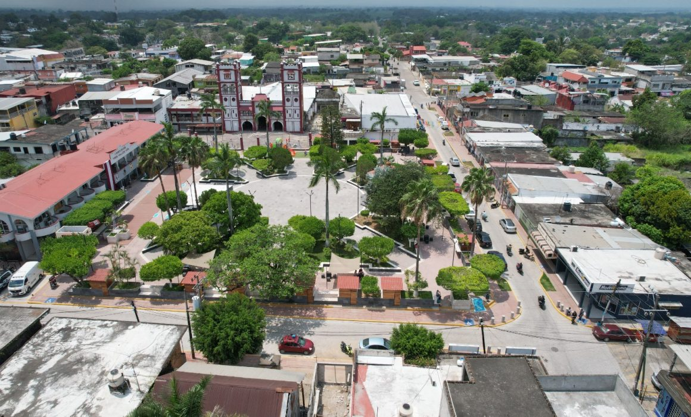
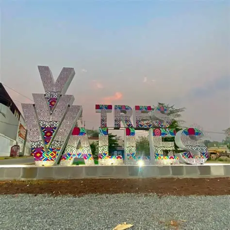
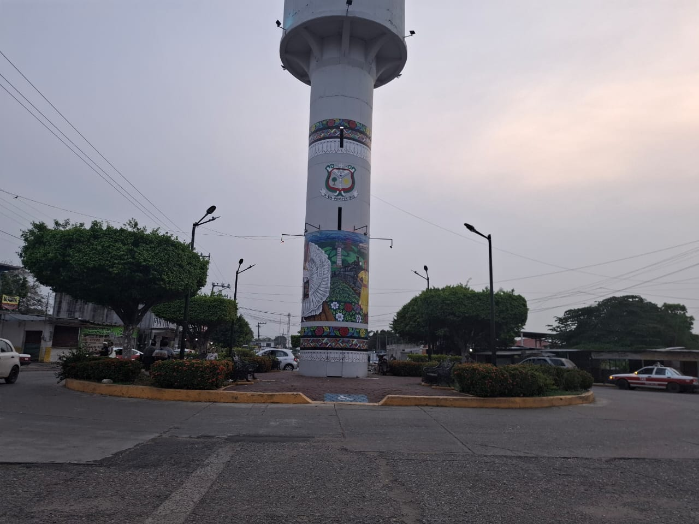
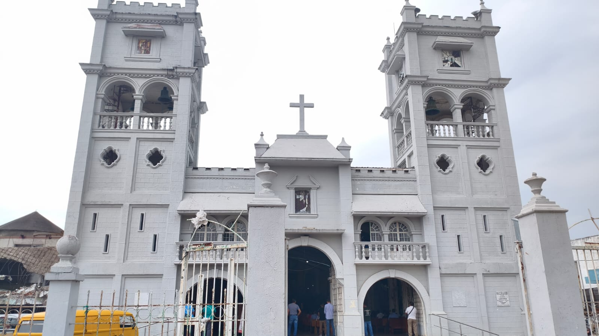
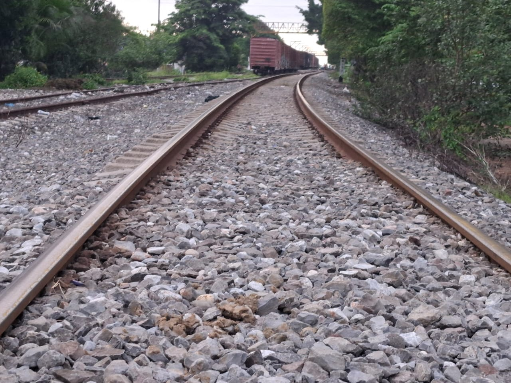
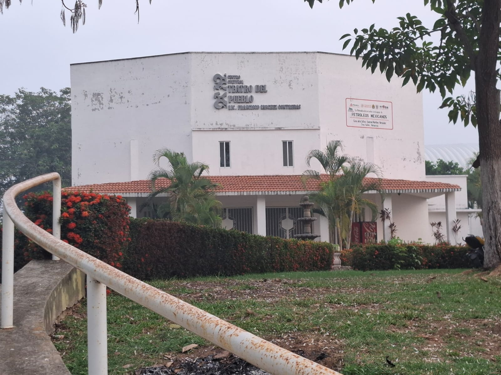

Contador de visitas
Tres Valles cuenta con diversos lugares de interés que forman parte importante de la vida social, cultural y recreativa del municipio. Estos espacios permiten la convivencia entre las personas, el descanso y la realización de distintas actividades que fortalecen la identidad de la comunidad.
La Unidad Deportiva Municipal Chavo Neme representa el corazón del deporte en Tres Valles, Veracruz, consolidándose como un espacio con más de cinco décadas de tradición para la comunidad. Ubicada en la colonia Prado, esta instalación funciona como la sede principal de ligas locales de fútbol y voleibol, siendo un punto de encuentro generacional para familias y atletas de la región, A pesar de su relevancia histórica,Actualmente, el campo se mantiene como un referente de identidad para los tresvallenses, complementando la infraestructura deportiva del municipio junto a complejos más modernos. Su futuro depende de la continuidad en los proyectos de modernización que buscan formalizar su documentación y garantizar instalaciones dignas para los torneos regionales.

El Parque Miguel Hidalgo es uno de los principales puntos de reunión en el municipio.onstituye el corazón geográfico y social de Tres Valles, funcionando como el principal espacio de reunión para sus habitantes y el escenario de los eventos más importantes de la comunidad. Es un lugar donde las personas pueden descansar, También es un sitio donde los niños pueden jugar y divertirse. También se realizan actividades y eventos, por lo que es muy visitado por la comunidad.El parque representa un espacio de convivencia social para los habitantes.A diferencia de otros parques modernos, el Miguel Hidalgo conserva una atmósfera de convivencia clásica donde las familias se reúnen por las tardes para disfrutar de los puestos de comida local que se instalan en sus alrededores, especialmente aquellos que ofrecen antojitos típicos y bebidas refrescantes.

El mercado es fundamental para la economía y la vida diaria, ya que en él se compran y venden productos básicos.Aquí se pueden encontrar alimentos, ropa y distintos artículos necesarios para la vida diaria, lo que lo convierte en un sitio muy frecuentado por los habitantes.Además de su importancia económica, también es un espacio de convivencia donde las personas interactúan y fortalecen relaciones.El mercado contribuye al desarrollo del municipio al generar empleo y movimiento económico.El mercado no es solo un lugar de compras, sino un espacio de interacción social donde se preservan los sabores y el trato directo entre productores y consumidores. En sus alrededores, es común ver el movimiento constante de camionetas que transportan mercancía desde las parcelas, lo que le da un ambiente muy característico de "pueblo vivo

Son un parador fotográfico y un distintivo turístico ubicado en el corazón del municipio. Al igual que en muchas ciudades de México, estas letras sirven para fortalecer la identidad local y ofrecer a los visitantes un lugar emblemático para tomar fotografías de recuerdo Las letras representan la identidad del municipio y son un lugar muy visitado para tomarse fotografías.Se ha convertido en un punto turístico donde tanto habitantes como visitantes pueden capturar recuerdos del lugar.Además, refuerza la identidad del municipio al mostrar su nombre de manera visible.Es un sitio sencillo pero muy significativo para la comunidad.

El tanque de agua es una estructura importante en el municipio,es una de las estructuras más icónicas y visibles del municipio. Ubicado en el centro de la comunidad ya que permite el almacenamiento y distribución del agua.Gracias a este sistema, los habitantes pueden contar con el servicio de agua.Además, es un punto conocido dentro del municipio.Su función es esencial para la vida diaria.Es un elemento clave en la infraestructura. Es la pieza clave para la regulación de la presión del agua potable en las colonias del centro y zonas aledañas. Se encuentra en la zona centro, específicamente en las inmediaciones del Palacio Municipal y la Plaza Principal.

La iglesia La Parroquia de Cristo Rey es la iglesia principal y más emblemática de Tres Valles, Veracruz, ubicada en el centro de la ciudad junto al parque principal y el Palacio Municipal. Es un punto de referencia local que destaca por su actividad comunitaria y celebraciones religiosas tradicionales en la región..Aquí se realizan celebraciones, misas y eventos importantes.Muchas personas acuden regularmente para practicar su fe.Forma parte de las tradiciones del municipio.Es un símbolo importante para los habitantes.

Son fundamentales para la estructura urbana, dividiendo la ciudad y originándose históricamente del "Ferrocarril de Veracruz al Istmo" inaugurado en 1898. Se ubican cerca de la estación central, rodeadas de actividad comercial, taquerías y la calle Ruiz Cortines, siendo un punto de cruce frecuente para los habitantes.Son un punto conocido por los habitantes de la comunidad.La estación se localiza a un costado de la calle Ruiz Cortines, cerca del mercado municipal y del bulevar Fernando Gutiérrez Barrios. Actualmente, aunque el servicio de pasajeros (como el antiguo "Jarocho") ya no opera de forma regular, las vías siguen siendo utilizadas para el transporte de carga pesada.

La Casa de Cultura es un espacio donde se realizan actividades artísticas y culturales, es el recinto cultural más importante de Tres Valles, Veracruz. Es el espacio dedicado a la preservación de las tradiciones locales, el fomento de las artes y la formación de los jóvenes de la región permitiendo el desarrollo de habilidades.tambien es un espacio dedicado a la promoción de actividades artísticas y culturales en el municipio.Aquí se realizan talleres, exposiciones y eventos culturales.Es importante para los jóvenes.Fomenta la participación cultural.en la comunidad para dar mas oportunidades.
